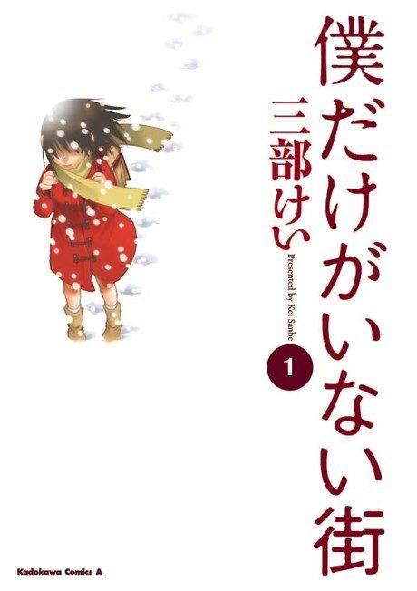

Animeter
 Anime
Anime
Manga2016 · Drama, Mystery, Psychological
Erased
僕だけがいない街
AniList8.1
Animeter—
Episodes12 ep
MangaCh. 31
Arcs
Single 12-episode season numbered 1-12.
Story arcFiller arc12 episodes
1
Season 1
Revival
Struggling manga artist Satoru Fujinuma has an ability he calls Revival that sends him back minutes before a tragedy.
Ep 1
2
Season 1
1988: Saving Kayo
Back in his childhood, Satoru tries to stop the serial kidnapping that began with his classmate Kayo Hinazuki.
Ep 2–4
3
Season 1
Fugitive in 2006
Thrown back to the present, Satoru is on the run as the prime suspect.
Ep 5–6
4
Season 1
Second Revival
Satoru returns to 1988 again and takes bolder steps to protect Kayo.
Ep 7–9
5
Season 1
The Killer
With Kayo safe, Satoru shifts his focus to the remaining targets.
Ep 10
6
Season 1
Future
Satoru wakes up years later and must finish what he started.
Ep 11–12
Sources: animefillerlist.com, Wikipedia